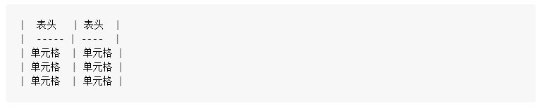
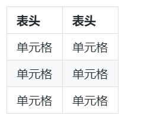

Markdown 基础语法
Markdown 是一种轻量级标记语言，通过简单的标记语法，它可以让文本内容具有一定的格式。MkDocs 的文件都是由 Markdown 语言编写的，如果你目前还没有接触过的话，我们提供了一个基础教程。
因为这一个关于 MkDocs 的技术文档， Markdown 语法并不是核心内容，所以这里只提供基础语法的教学，帮助大家快速上手。如果想要学习更多 Markdown 标记语法，可以去 Markdown - 语法说明 学习；如果想要试试功能全面、操作便捷的 Markdown 编辑器，MdEditor 是个不错的选择。建议打开 MdEditor，一边操作一边学习。
标题
语法
# 一级标题
## 二级标题
### 三级标题
#### 四级标题
##### 五级标题
注：展示标题显示结果的话，某些情况下会影响目录显示，所以在此就不做展示了~
字体
语法
*斜体文本*
**粗体文本**
***粗斜体***
显示结果
斜体文本 粗体文本 粗斜体
无序列表
语法
* 第一项
* 第二项
* 第三项
显示结果
- 第一项
- 第二项
- 第三项
有序列表
语法
1. 第一项
2. 第二项
3. 第三项
显示结果
- 第一项
- 第二项
- 第三项
下划线
语法
<u>带下划线的文本</u>
显示结果
带下划线的文本
删除线
语法
~~要删除的文本~~
显示结果

代码
语法
`代码`
显示结果
代码
引用
语法
> 引用的文本
显示结果
引用的文本
链接
语法
[链接名称](链接地址)
显示结果
图片
语法

显示结果
表格
语法

显示结果

锚点链接
此处以对上文字体标题锚点链接为例：点击链接到字体。
此处可能需要一点 HTML 知识。在目标地点字体标题附近添加一个带有独一id属性的标签，比如<div id="font"></div>，然后利用id实现页面内的跳转，语法如下：
[点击链接到字体](#font)